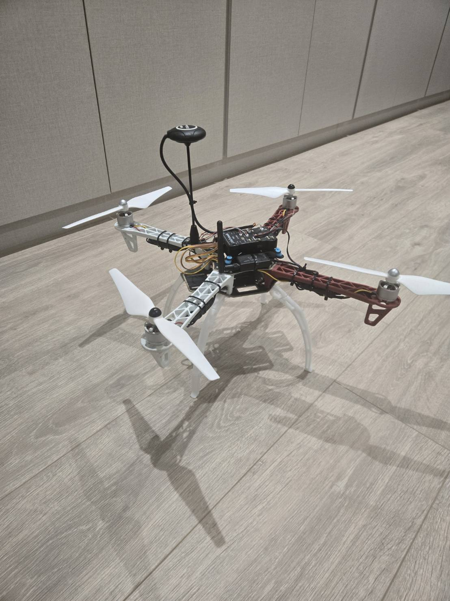

Mechanical & electrical integration
Component selection, assembly, soldering, wiring, CAD, 3D printing, and the custom Raspberry Pi/Pixhawk mount.
View build work →A custom PX4-based drone combining mechanical design, flight control, onboard computer vision, post-flight diagnostics, and autonomous mission software.

The site is organized by the work completed in each subsystem. Each page includes photos, test videos, graphs, CAD, and source-code links where relevant.
Component selection, assembly, soldering, wiring, CAD, 3D printing, and the custom Raspberry Pi/Pixhawk mount.
View build work →Failed tests, PX4 logs, power spectral density, gyro filtering, PID tuning, magnetic-interference analysis, and stable hover.
View flight work →Raspberry Pi setup, YOLO deployment, inference optimization, and target-offset output for control.
View vision work →MAVSDK offboard control, mission-state logic, visual alignment, telemetry, and payload-control code.
View autonomy work →The software stack and flight platform are functional, while full end-to-end autonomous delivery is still under development.